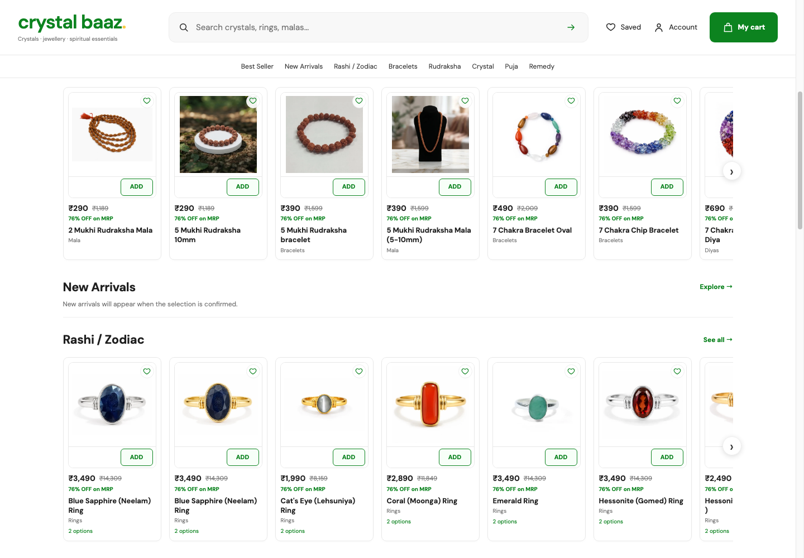
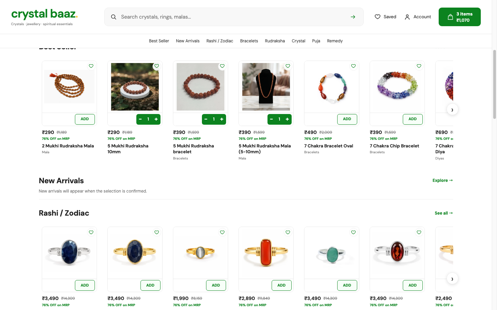
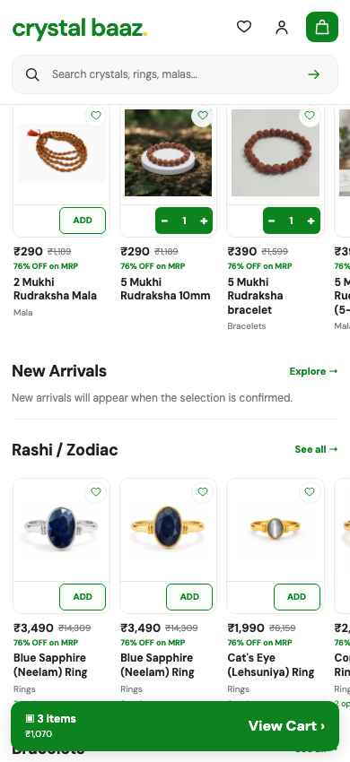
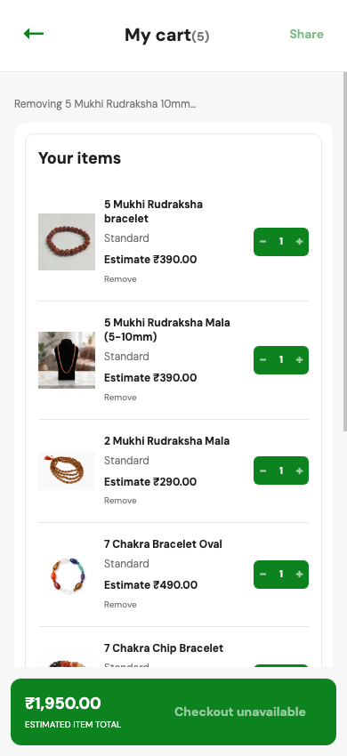
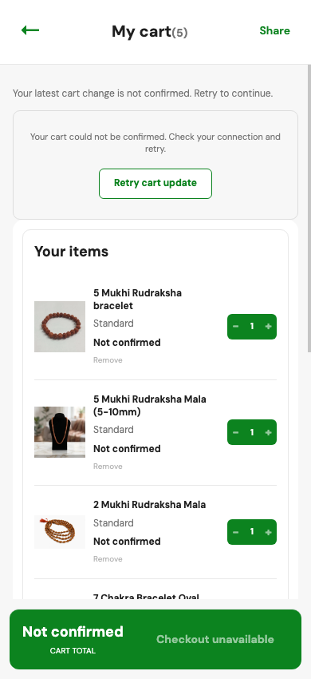
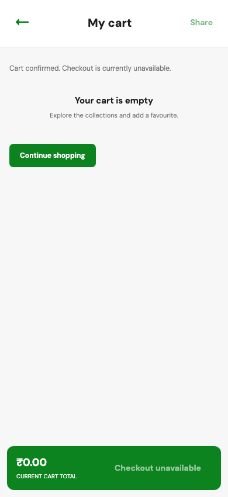

Crystal Baaz: before and after
Live Storefront catalog screenshots captured in an isolated browser profile. The before desktop image shows the full card border nested around the image tile; the after image keeps the tile boundary and opens the product copy area.





